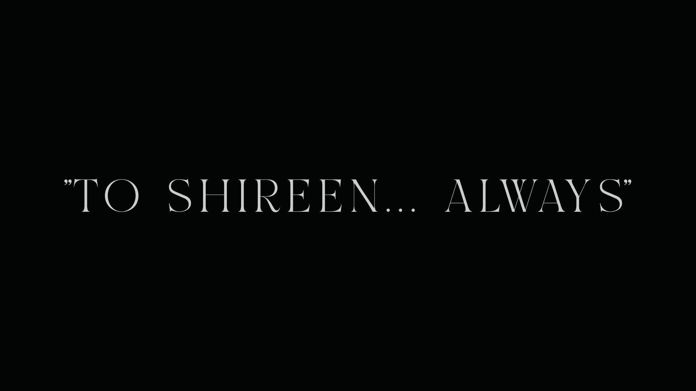

CASE 0 : TOMORROW (2026) — Poster

Archaeology of Unborn Faces — Frame

The Great City — Ontology of Truth

The Illusion Industry — Archive

Director Portrait — Personal Archive

Cinematography Still — Perspective I

Cinematography Still — Perspective II

My Soul — Dedication Frame